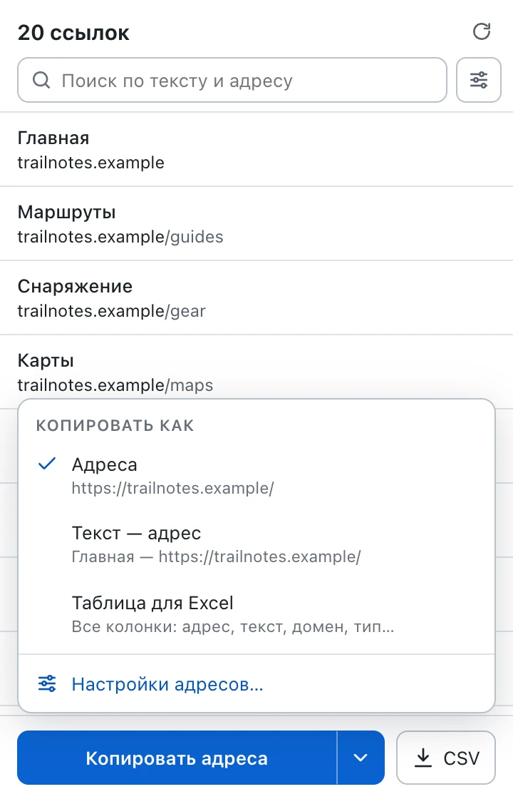

Коротко: откройте страницу, нажмите на значок Link Extractor, откройте меню рядом с кнопкой Копировать адреса и выберите Таблица для Excel. Вставьте в Excel или Google Sheets: адрес и текст ссылки попадут в отдельные колонки, по строке на ссылку, в порядке страницы.
Для кого это
Для SEO-специалистов, которые проверяют анкоры, редакторов, которые составляют список источников, и всех, кому важно знать не только куда страница ведёт, но и что написано на каждой ссылке.
Три способа получить текст и адрес вместе
- Таблица для Excel (в меню рядом с кнопкой Копировать адреса): таблица со строкой заголовков — адрес, текст, домен, тип и другое. Вставьте её в таблицу, и она разложится по колонкам.
- Текст — адрес (то же меню): по одной паре «текст — адрес» на строку, для документа, письма или чата.
- CSV: файл с теми же колонками — если нужно сохранить или открыть позже. Смотрите как выгрузить ссылки в CSV для Excel.
Адреса в том же меню копирует только адреса, по одному на строку.
Пошагово
- Откройте страницу и нажмите на значок Link Extractor (Alt+Shift+L, на Mac Ctrl+Shift+L).
- По желанию сузьте список строкой поиска или в Фильтры и настройки.
- Откройте меню рядом с кнопкой Копировать адреса и выберите Таблица для Excel или Текст — адрес.
- Вставьте в таблицу или документ.

Как выбираются текст и порядок
- Текст — то, что вы видите на ссылке, лишние пробелы и переносы строк схлопываются. Для ссылки-картинки это alt-текст картинки, а если его нет — подпись или title ссылки. Ссылка совсем без текста помечается как не имеющая его.
- Порядок — порядок страницы, сверху вниз, включая ссылки внутри веб-компонентов.
- Повторы — одна строка, которая стоит там, где ссылка встретилась впервые, со счётчиком, сколько раз она есть на странице. Если первая копия — картинка без текста (фото товара, логотип), строка берёт текст из более поздней копии, где он есть.
-
Полные адреса: относительные ссылки вроде
/aboutстановятся полными адресами, разобранными так же, как это делает браузер.
Когда лучше другой инструмент
- Анкоры ссылок на ваш сайт с других сайтов (обратных ссылок). Эти данные дают сервисы обратных ссылок вроде Ahrefs или Semrush; Link Extractor читает открытую у вас страницу.
- Анкоры по всему сайту. Link Extractor не обходит сайт; это делает инструмент для аудита.
Вопросы
Можно ли сохранить каждое вхождение, а не объединять повторы?
Один и тот же адрес — всегда одна строка со счётчиком. В разделе Дубли можно выбрать, чтобы также объединялись ссылки, которые различаются только частью после # или слэшем в конце.
Работает ли «Таблица для Excel» в Google Sheets?
Да. Вставьте её в ячейку, и колонки заполнятся так же.
Можно ли получить пары только с части страницы?
Да. Выделите нужную часть, нажмите правой кнопкой мыши и выберите Собрать ссылки из выделенного, затем копируйте, как описано выше.
Смотрите также: как собрать email, телефоны и ссылки на файлы.